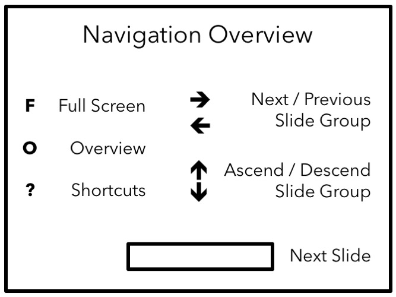
Linear models are simple (e.g., easy to fit and interpret) but quite inflexible, since often linearity assumption is a poor approximation
We need to look beyond linear models, and choose models that somehow are not too complicated but flexible enough to considerably improve upon linear models
We will discuss four types of models: polynomial regression, spline models, and generalized additive models
Scalar predictor \(X\) and scalar response \(Y\):
Reason: dominant term \(\beta_{d}X^{d}\) (when \(\beta_{d}\neq0\)) varies wildly near boundary of observed \(X\) variable
Caution: Boundary effect is a common problem for complicated models, and there are strategies to mitigate this
Covariance matrix of \(\hat{\beta}=\left( \hat{\beta}_{0} ,\hat{\beta}_{1},\hat{\beta}_{2},...,\hat{\beta}_{d}\right) ^{T}\) as \(\mathbf{C}\)
\(\mathbf{C}\) can be complicated
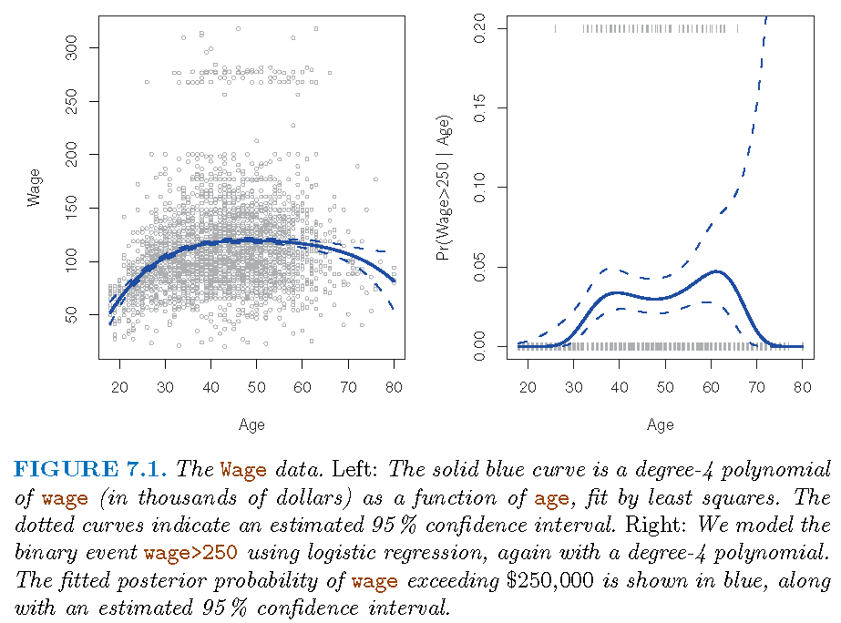
\(\left(d+1\right)\) monomials \(1,X,X^{2},...,X^{d}\) generate polynomials \(\mathcal{P}_d\) of degree \(d\) with elements: \[ f_d(x)=\beta_{0}+\beta_{1}x+\beta_{2}x^{2}+\cdots+\beta_{d}x^{d} \]
\(\left\{ f_{i}\right\} _{i=1}^{d}\) are called basis functions for \(\mathcal{F}\)
Note: these are concepts in linear algebra
A global polynomial regression model has intrinsic disadvantages
Alternative strategy: fit different polynomial regressions on different parts of data, by requiring these polynomials to be consistent in some sense, so that the resultant model displays some stability as it transits from one part of data to the other
Consider the model \(M\): \[ Y=\left\{ \begin{array} [c]{cc}% \beta_{01}+\beta_{11}X+\beta_{21}X^{2}+\beta_{31}X^{3}, & X<c\\ \beta_{02}+\beta_{12}X+\beta_{22}X^{2}+\beta_{32}X^{3}, & X\geq c \end{array} \right. \]
Data version \[ y_{i}=\left\{ \begin{array} [c]{cc}% \beta_{01}+\beta_{11}x_{i}+\beta_{21}x_{i}^{2}+\beta_{31}x_{i}^{3}, & x_{i}<c\\ \beta_{02}+\beta_{12}x_{i}+\beta_{22}x_{i}^{2}+\beta_{32}x_{i}^{3}, & x_{i}\geq c \end{array} \right. \]
\(M\) has two sub-models, \(M_{1}\) and \(M_{2}\), on two distinct parts, \(D_{1}=\left\{ \left( X,Y\right) :X<c\right\}\) and \(D_{2}=\left\{ \left( X,Y\right) :X\geq c\right\}\), of data space
\(c\) for \(X\) is where \(M\) transits from \(M_{1}\) to \(M_{2}\) (or vice versa); \(c\) is called a “knot”
Two cases of transition of \(M\) from \(M_{1}\) to \(M_{2}\):
For practical purposes it is often desirable to have Case 2, and the \(3\)-degree polynomials with matching values (i.e., \(M\) itself is continuous), speeds (i.e., first-order derivatives) and curvatures (i.e., second-order derivatives) at each knot are called cubic splines
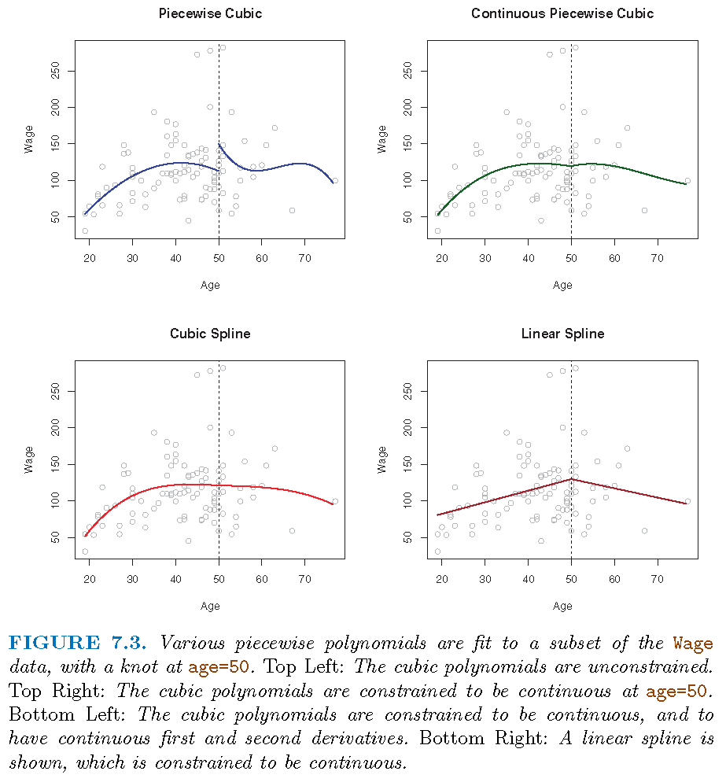
Split the range of \(X\) into \(K+1\) parts and only employ polynomials of degree \(d\); so needing \(K\) knots and \(K+1\) such polynomials
Restrict these polynomials such that there are \(s\) constrains for each distinct pair of them at a knot, then we have \(p=T-C\) parameters to estimate
\(C = K \times s\); \(K\) number of knots and \(s\) number of constraints at each knot
In the above formula, \(s\), the number of constraints at each knot can be understood as follows:
If submodels \(M_{i}\) and \(M_{i+1},i=1,...,K\) match in their values and up to their \(\left( s-1\right)\)-th order derivatives at each knot \(Q_{i}\), then at knot \(Q_{i}\) there are \(s\) constraints on their associated polynomials
If we take \(0\)-th order derivative as performing no differentiation but keeping original function untouched, then \(M_{i}\) and \(M_{i+1},i=1,...,K\) matching up to their \(r\)-th order derivatives at each knot \(Q_{i}\) induces \(r+1\) constraints
Consider \(d=3\). A cubic spline with \(K\) knots can be modelled as \[ y_{i}=\beta_{0}+\beta_{1}b_{1}\left( x_{i}\right) +...+\beta_{K+3}b_{K+3}\left( x_{i}\right) +\varepsilon_{i} \] for an appropriate choice of basis functions \(b_{1},b_{2},...,b_{K+3}\)
One such basis is partially induced by the function \[ h\left( x,\xi\right) =\left( x-\xi\right) _{+}^{3}=\left\{ \begin{array} [c]{cc}% \left( x-\xi\right) ^{3}, & x>\xi\\ 0, & x\leq\xi \end{array} \right. \]
As for any regression that employs a polynomial, fitted model may be unstable near or at the boundary (induced by observed values of predictors)
A natural spline is a regression spline which is required to be linear at the boundary (in the region where \(X\) is smaller than the smallest knot, or larger than the largest knot)
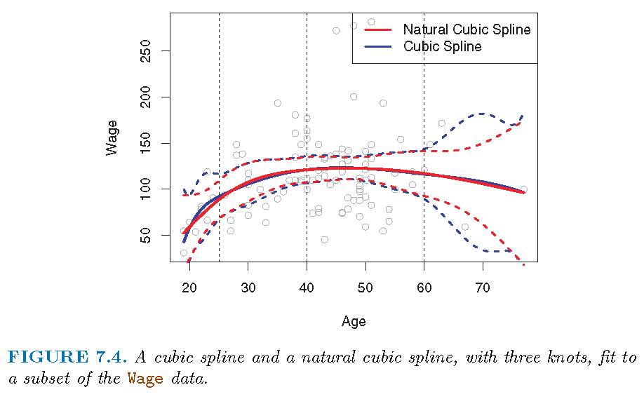
Regression spline is most flexible in regions that contain a lot of knots, because in those regions the polynomial coefficients can change rapidly. Hence, one option is to place more knots in places where we feel the function might vary most rapidly, and to place fewer knots where it seems more stable
While this option can work well, in practice it is common to place knots in a uniform fashion. One way to do this is to specify the desired degrees of freedom, and then have the software automatically place the corresponding number of knots at uniform quantiles of the data, as done, e.g., by \(10\)-fold CV based on the residual sum of squares (RSS) values
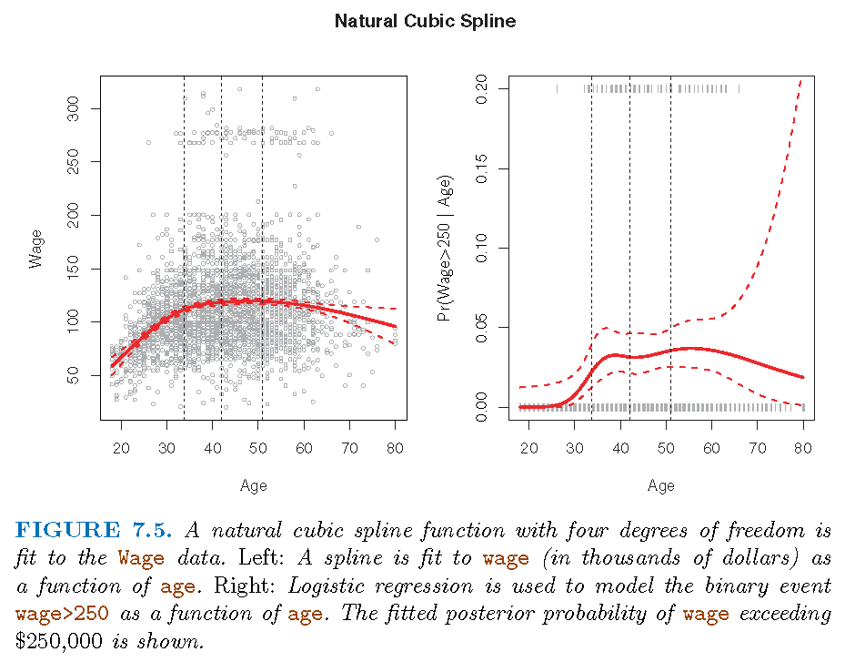
age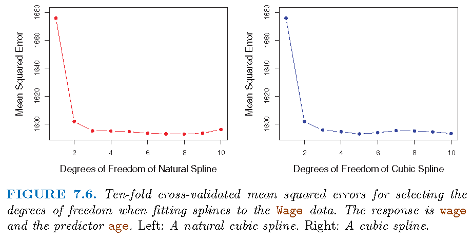
“Regression splines often give superior results to polynomial regression”:
To be more flexible, polynomial regressions resort to higher degree polynomials which results in added instability at boundary (of observations for \(X\)).
Splines only need to plan for better knots in order to achieve flexibility, and natural splines alleviate instability at boundary
Spline captures much better (than polynomial regression) local behavior of \(f\) in true model \(E(Y|X)=f(X)\) where \(f\) changes rapidly.
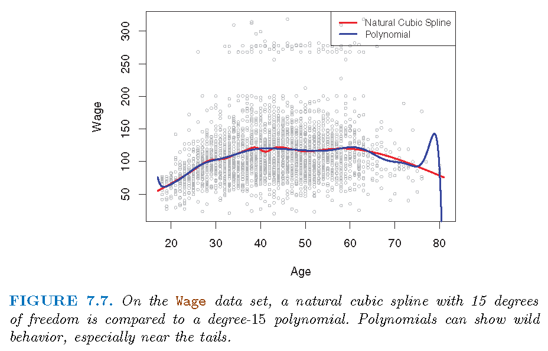
Smoothing splines are splines produced directly by restricting how smooth a candidate function can be:
Given the data \(\left\{ \left( x_{i},y_{i}\right) :i=1,...n\right\}\), there is a function \(g\) such that \(\sum_{i=1}^{n}\left( y_{i}-g\left( x_{i}\right) \right)^{2}=0\)
In terms of the local properties of \(g\) such as continuity and differentiability, we can restrict the integrated curvature of \(g\), which is \(\int\left[ g^{\prime\prime}\left( t\right) \right] ^{2}dt\). The integral essentially restricts how variable \(g^{\prime\prime}\) is (and hence approximately how variable the curvature of \(g\) is)
(for each fixed \(\lambda\geq0\)) is called a smoothing spline
Penalty term referred to as roughness penalty
When \(\lambda=0\), the penalty term has no effect and \(g\) can be discontinuous and will exactly interpolate the data
When \(\lambda\neq0\), \(g\) has to be twice differentiable in order to possess a second order derivative
When \(\lambda=\infty\), the minimizer \(\hat{g}\) must satisfy \(\hat{g}^{\prime\prime}\left( t\right) =0\). This means that \(\hat {g}\) has to be a linear function, i.e., \(\hat{g}\left( x\right) =\beta _{0}+\beta_{0}x\), in which case we get linear regression
The minimizer \(\hat{g}_{\lambda}\) for \(\lambda\in\left( 0,1\right)\), being a shunken version of a natural cubic spline, has the following properties:
\(\hat{g}_{\lambda}\) is a piecewise cubic polynomial with knots at the unique values of \(x_{1},...,x_{n}\)
\(\hat{g}_{\lambda}\) has continuous first and second order derivatives at each knot
\(\hat{g}_{\lambda}\) is linear in the region outside of the extreme knots
Proof of the above is a bit complicated and uses machinery from functional analysis and differential equations
Tuning parameter \(\lambda\) controls the effective degrees of freedom, \(df_{\lambda}\), of \(\hat{g}\)
\(df_{\lambda}\) decreases from \(n\) to \(2\) as \(\lambda\) increases from \(0\) to \(\infty\)
\(df_{\lambda}\) measures flexibility of \(\hat {g}_{\lambda}\), in the sense that larger \(df_{\lambda}\) induces a more flexible \(\hat{g}_{\lambda}\)
Let \(\mathbf{S}_{\lambda}\in\mathbb{R}^{n\times n}\) be formed by evaluating associated basis functions at the \(x_{i}\)’s. Then \[ \mathbf{\hat{g}}_{\lambda}=\left( \begin{array} [c]{c}% \hat{g}_{\lambda}\left( x_{1}\right) \\ \hat{g}_{\lambda}\left( x_{2}\right) \\ \vdots\\ \hat{g}_{\lambda}\left( x_{n}\right) \end{array} \right) =\mathbf{S}_{\lambda}\left( \begin{array} [c]{c}% y_{1}\\ y_{2}\\ \vdots\\ y_{n}% \end{array} \right) \]
Effective degrees of freedom is defined as \[ df_{\lambda}=\sum_{i=1}^{n}\mathbf{S}_{\lambda}\left( i,i\right) , \] where \(\mathbf{S}_{\lambda}\left( i,j\right)\) is the \(\left( i,j\right)\) entry of \(\mathbf{S}_{\lambda}\)
Best \(\lambda\) achieves the smallest cross-validation RSS among a grid values of \(\lambda\)
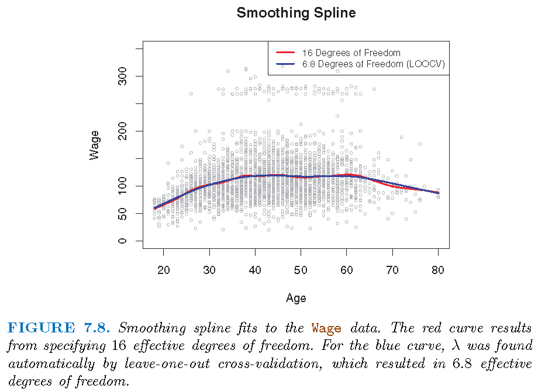
GAMs can be applied to both quantitative and qualitative responses
Consider \[ y_{i}=\beta_{0}+\beta_{1}x_{i1}+\beta_{2}x_{i2}+\cdots+\beta_{p}% x_{ip}+\varepsilon_{i} \]
Replace \(\beta_{j}x_{ij}\) by \(f_{j}\left( x_{ij}\right)\) to get a GAM as \[ y_{i}=\beta_{0}+f_{1}\left( x_{i1}\right) +f_{2}\left( x_{i2}\right) +\cdots+f_{p}\left( x_{ip}\right) +\varepsilon_{i} \] for a set of known functions \(\left\{ f_{j}\right\} _{j=1}^{p}\)
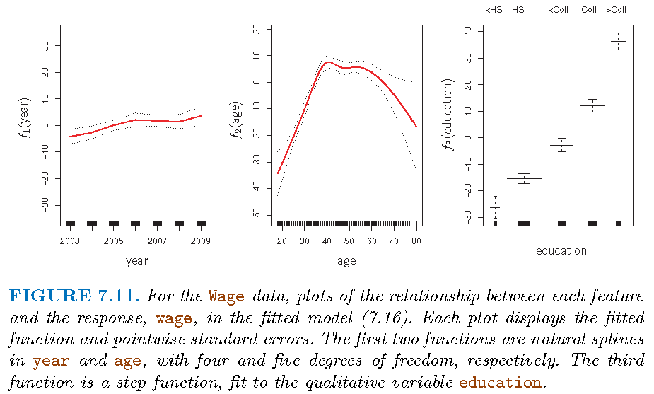
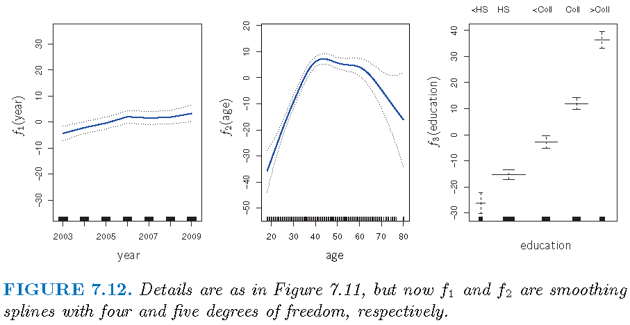
A binary response, linear version: \[ \log\left( \frac{\Pr\left( Y=1|X\right) }{1-\Pr\left( Y=1|X\right) }\right) \\ =\beta_{0}+\beta_{1}x_{i1}+\beta_{2}x_{i2}+\cdots+\beta_{p}% x_{ip}+\varepsilon_{i}% \]
GAM version: \[ \log\left( \frac{\Pr\left( Y=1|X\right) }{1-\Pr\left( Y=1|X\right) }\right) \\=\beta_{0}+f_{1}\left( x_{i1}\right) +f_{2}\left( x_{i2}\right) +\cdots+f_{p}\left( x_{ip}\right) +\varepsilon_{i}% \]
Model: \[ \log\left( \frac{p\left( X\right) }{1-p\left( X\right) }\right) \\ =\beta_{0}+\beta_{1}\times\text{year}+f_{2}\left( \text{age}\right) +f_{3}\left( \text{education}\right) \]
Note: there are no individuals with less than a high school education who earn over $250,000 per year
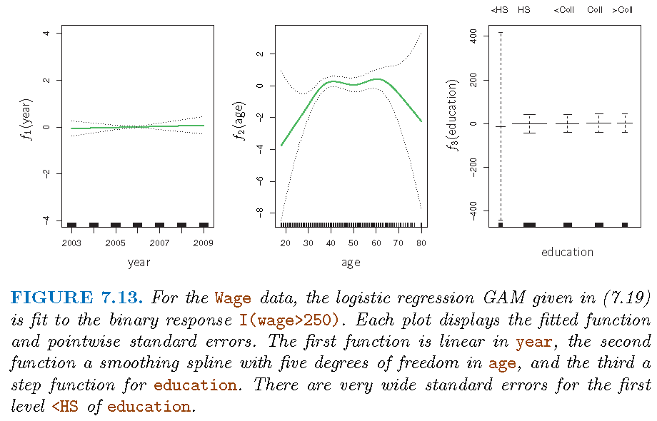
gam> sessionInfo()
R version 3.5.0 (2018-04-23)
Platform: x86_64-w64-mingw32/x64 (64-bit)
Running under: Windows 10 x64 (build 19044)
Matrix products: default
locale:
[1] LC_COLLATE=English_United States.1252
[2] LC_CTYPE=English_United States.1252
[3] LC_MONETARY=English_United States.1252
[4] LC_NUMERIC=C
[5] LC_TIME=English_United States.1252
attached base packages:
[1] stats graphics grDevices utils datasets methods
[7] base
other attached packages:
[1] knitr_1.21
loaded via a namespace (and not attached):
[1] compiler_3.5.0 magrittr_1.5 tools_3.5.0
[4] htmltools_0.3.6 revealjs_0.9 yaml_2.2.0
[7] Rcpp_1.0.12 stringi_1.2.4 rmarkdown_1.11
[10] stringr_1.3.1 xfun_0.4 digest_0.6.18
[13] evaluate_0.13